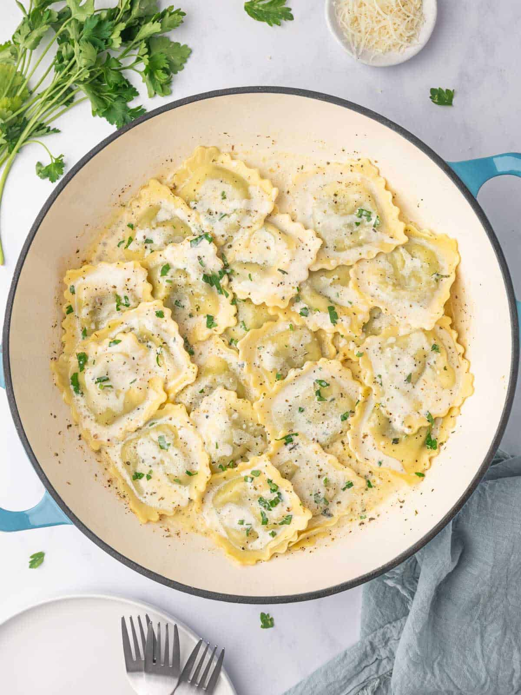

Creamy Spinach and Cheese Ravioli

Description
Store-bought cheese ravioli gets dressed up in a quick, creamy spinach sauce for a comforting weeknight dinner. The whole thing comes together in one pan while the pasta boils, making it a fast option that still feels indulgent.
Ingredients
- 1 package (18-20 oz) refrigerated or frozen cheese ravioli
- 2 tbsp unsalted butter
- 2 cloves garlic, minced
- 2 tbsp all-purpose flour
- 1 cup milk
- 1/2 cup heavy cream
- 3 cups fresh baby spinach
- 1/2 cup grated Parmesan cheese
- Salt and pepper, to taste
- Pinch of red chili flakes (optional)
Steps
- Bring a pot of salted water to a boil and cook the ravioli according to package directions. Drain and set aside.
- While the pasta cooks, melt the butter in a large skillet over medium heat and sauté the garlic for about 30 seconds, until fragrant.
- Whisk in the flour and cook for 1 minute to remove the raw flour taste.
- Slowly whisk in the milk and cream, stirring until the sauce thickens, about 3-4 minutes.
- Add the spinach and cook until wilted, about 2 minutes.
- Stir in the Parmesan cheese, season with salt, pepper, and chili flakes if using.
- Gently fold in the cooked ravioli, coating it in the sauce, and serve immediately.
Back to Odin Recipes